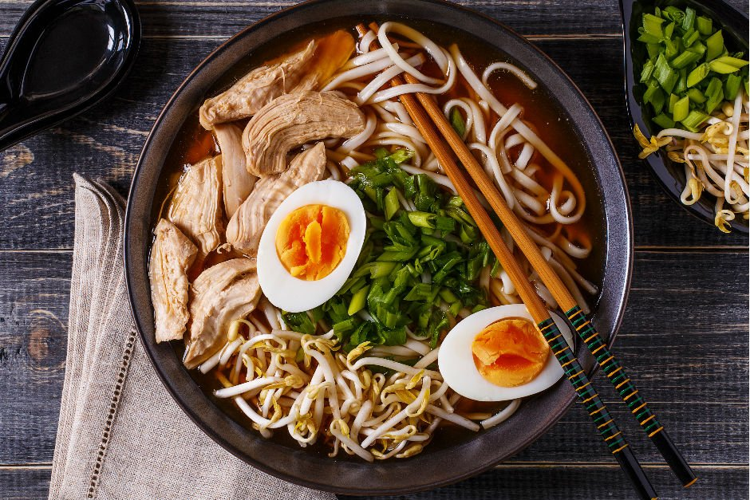

Ramen

Description
Ramen (/ˈrɑːmən/) (拉麺, ラーメン, rāmen, IPA: [ɾaꜜːmeɴ]) is a
Japanese noodle soup. It consists of Chinese-style wheat noodles served in a meat or (occasionally) fish-based broth, often flavored with soy sauce or miso,
and uses toppings such as sliced pork (叉焼, chāshū), nori (dried seaweed), menma, and scallions. Nearly every region in Japan has its own variation of ramen,
such as the tonkotsu (pork bone broth) ramen of Kyushu, and the miso ramen of Hokkaido. Mazemen is a ramen dish that is not served in a soup,
but rather with a sauce (such as tare).
Ingredients
- Fresh Noodles
- Chashu
- Ramen Egg
- Shiraga Negi
- Sweet corn kernels
- Chopped green onion
- Nori seaweed
Steps
- Gather all the ingredients.
- Mince the garlic
- Mince the shallot
- Grind sesame seeds, leaving some seeds unground for texture.
- In a medium pot, heat sesame oil over medium-low heat and add the minced garlic, ginger, and shallot.
- With a wooden spatula, stir fry until fragrant.
- Add the meat and increase heat to medium. Cook the meat until no longer pink.
- Add spicy bean paste (La Doubanjiang) or non-spicy bean paste (Doubanjiang) and miso. Quickly blend well with the meat before they get burnt.
- And add the ground sesame seeds and sugar and mix well.
- Add sake and chicken stock, and bring it to a simmer.
- Taste your soup and add salt (if necessary) and white pepper. Each chicken stock varies in saltiness, so you have to taste your own soup to decide how much salt is necessary.
- Cover with the lid and keep the ramen soup simmered while you cook noodles.
- Cook the noodles according to the package instructions
- When noodles are done, quickly pick them up with a mesh sieve. You don’t want to dilute your soup, so make sure to drain the water well. Serve the noodles into bowls.
- Add the ramen soup and top with various toppings you’ve prepared.
- Place the toppings of your choice and serve immediately.